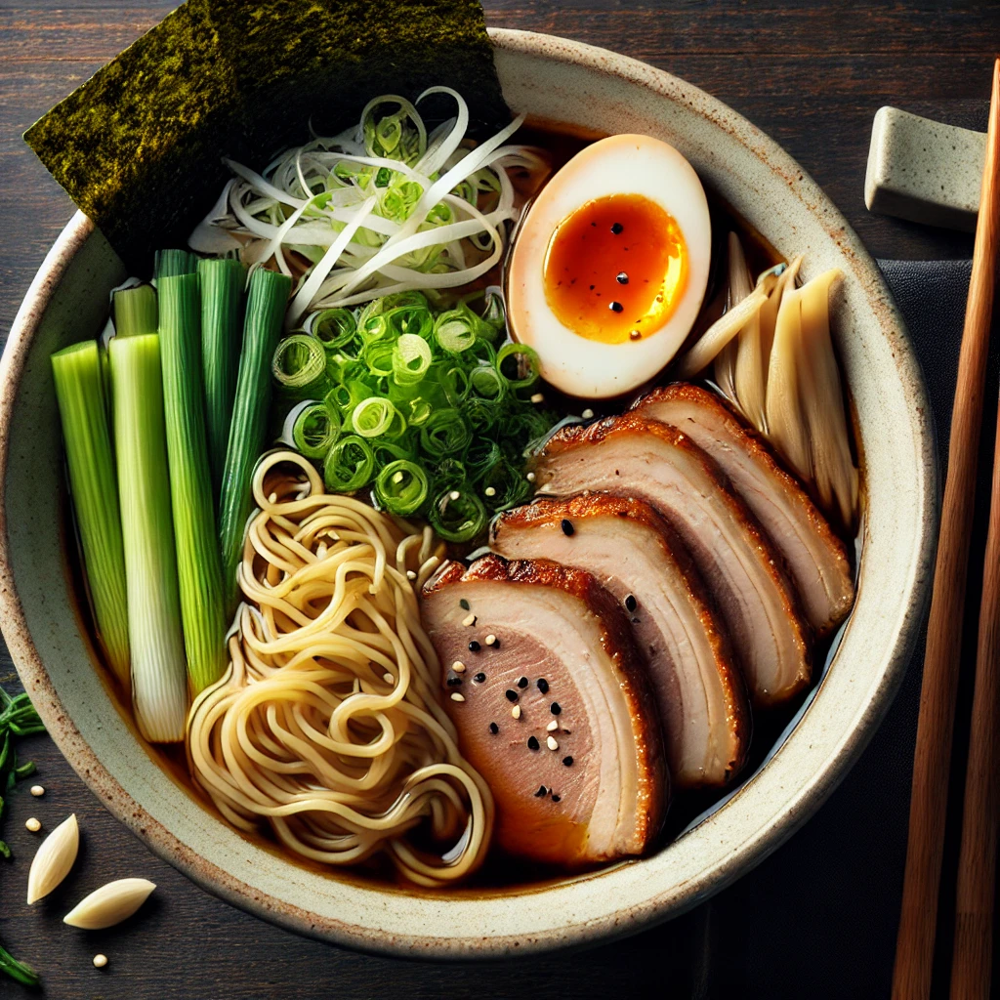

Ramen tradicional japonés
Receta de ramen japonés con caldo casero, fideos y toppings típicos como huevo marinado y cerdo chashu

Ingredientes
Para el caldo
- 1 litro de agua
- 500 g de huesos de cerdo
- 1 trozo de jengibre (5 cm), en rodajas
- 2 dientes de ajo
- 1 cebolla grande, cortada en cuartos
- 2 cucharadas de salsa de soja
- 1 cucharada de miso
Para los toppings
- 2 huevos
- 100 g de panceta de cerdo (Chashu)
- 2 hojas de alga nori
- Cebolla verde (en rodajas finas)
- Brotes de bambú
Para los fideos
Preparación
- Coloca los huesos de cerdo en una olla con agua hirviendo durante 10 minutos para limpiar las impurezas. Escurre y enjuaga los huesos.
- Llena una olla grande con 1 litro de agua y añade los huesos limpios, el jengibre, el ajo, y la cebolla. Cocina a fuego lento durante 2-3 horas.
- Agrega la salsa de soja y el miso al caldo, ajusta la sazón según el gusto.
- Hierve los huevos durante 6 minutos, luego sumérgelos en agua con hielo. Pela y marina los huevos en una mezcla de salsa de soja, mirin y agua durante al menos 2 horas.
- Cocina los fideos ramen según las instrucciones del paquete y resérvalos.
- En un tazón, sirve los fideos calientes, agrega el caldo y decora con el huevo marinado, la panceta de cerdo, alga nori, cebolla verde y brotes de bambú.
- Sirve y disfruta de tu delicioso ramen casero!
Dificultad: mediaCocina: tradicionalVegetariana: noCelíacos: noAnticáncer: no
✔🍳🥩
Autor:Anónimo